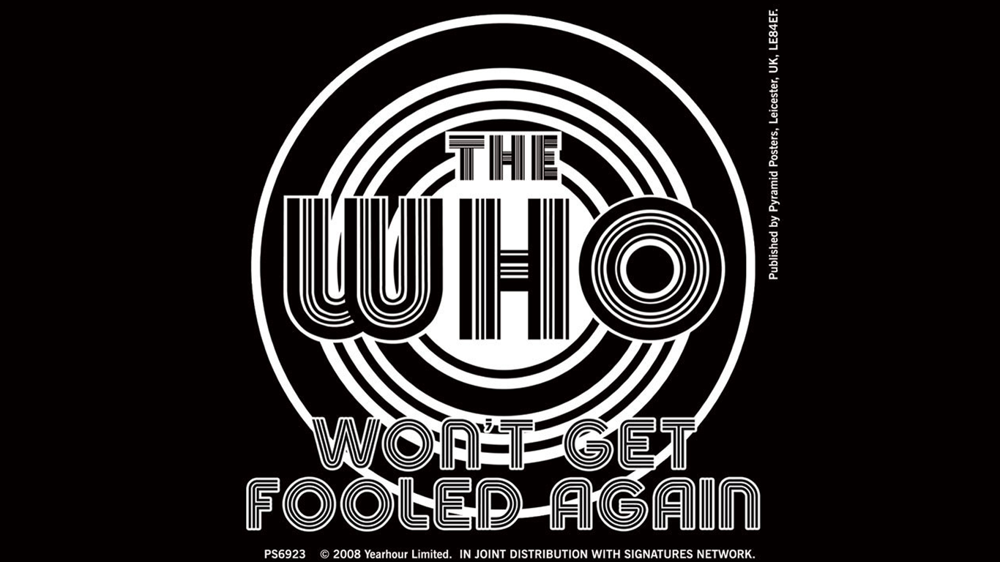

Won’t get fooled againEs una canción de la banda de rock británica The Who, escrita por su guitarrista Pete Townshend. Sencillo del álbum Who's Next. Se basa en la idea de una revolución, representando cínicamente la esperanza en torno al concepto Me quito el sombrero ante la nueva constitución.Haré una reverencia para la nueva revolución y posteriormente la decepción del nuevo régimen. Conoce al nuevo jefe / Es igual al jefe anterior. El año de éxito fue 1971 |
 |